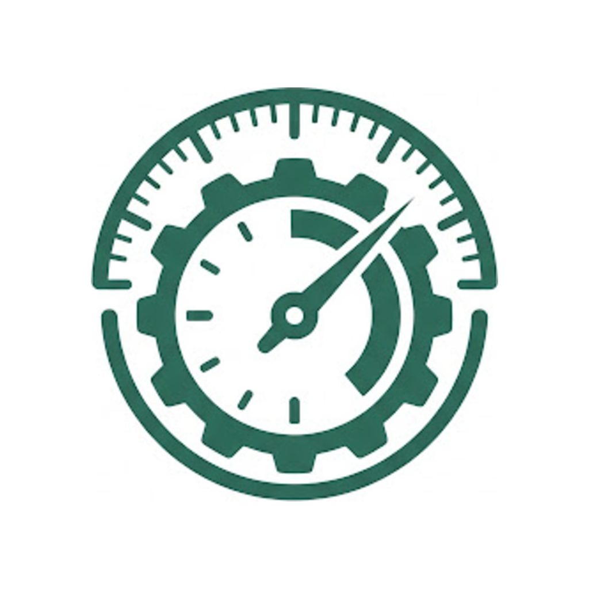
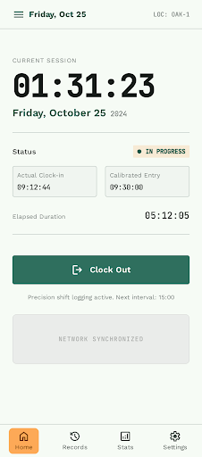
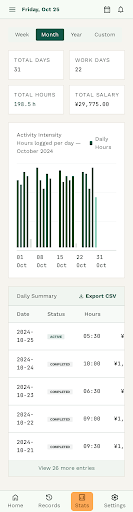

Editor
Jumper™
在 JetBrains IDE 里，把当前文件精准交给你正在使用的任何编辑器。一次右键，跳到 Cursor、VS Code、TRAE、Codex，或你自定义的工具。
在 JetBrains Marketplace 查看 ↗OPEN SOURCE
1.0.2
1.0.2

SELECTED WORKS
从代码编辑器到每日工时，我们相信好的工具不会喧宾夺主，只会让下一步变得自然。
在 JetBrains IDE 里，把当前文件精准交给你正在使用的任何编辑器。一次右键，跳到 Cursor、VS Code、TRAE、Codex，或你自定义的工具。
在 JetBrains Marketplace 查看 ↗

THE PRINCIPLE
每个入口都经过取舍，只留下真正帮助你完成工作的部分。
工具适应工作流，而不是要求你改变习惯去适应工具。
小而可靠，持续打磨。让今天的版本经得起明天的使用。
KEEP IN TOUCH